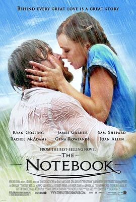

2014年6月 8 条
2014-06-29 18:36:42
读过 代码的未来 ★★★☆☆
作者是Ruby创始人，这本书就60%在写Ruby了。但是还是有些有意思的概念，比如metaprogramming, duck typing等，了解了不少。
2014-06-24 20:48:21

I really really love this story!!!
2014-06-17 23:01:32
收藏图书到豆列 Programming - RE & ASM L 逆向工程核心原理
2014-06-17 20:15:56
读过 人月神话 ★★★★☆
不能避免的焦油坑，不存在的银弹。真是，今天与30年前在项目管理上真是没什么差别。本书实在经验容量太大，不能啃透啊，看来以后还是得再看很多遍。
2014-06-16 21:53:26
想读 The Annotated C++ Reference Manual
这本不读就有些遗憾了，Stroustrup的另一本著作
2014-06-14 20:53:49
看过 同桌的妳 ★★★☆☆
第一次看到这么狗血的青春片。_(:з」∠)_
2014-06-07 01:39:47
看过 挪威的森林 / ノルウェイの森 ★★★★☆
珍惜活着的人！真是深刻！故事不是发生在挪威，只是因为“Norwegian wood”这首歌？
2014-06-03 19:56:52
读过 灼熱の小早川さん ★★★★☆
口三才的作品果然对人剖析得很生动！（口三才脑残粉）